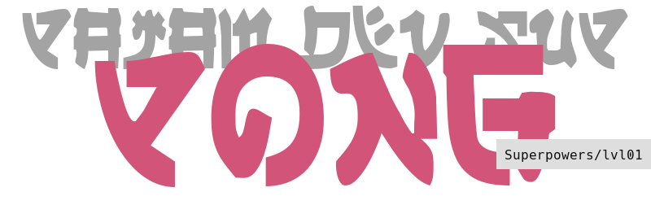

<!DOCTYPE html><html><head><title>p_Понг</title><link rel="shortcut icon" href="/favicon.gif"><meta charset="utf-8"><meta name="viewport" content="width=device-width, initial-scale=1"><link rel="stylesheet" href="/css/style.css"></head></html><body class="artcl"><div class="artcl__back"></div><div class="artcl__overlay artcl__overlay--game"></div><aside class="sidebar"><div class="top-bar"><div class="top-bar__left"><a href="/sup" class="logo logo--game">p<span class="logo__slug">sup</span></a></div><div class="top-bar__right top-bar__right--pages"><a href="#" class="top-bar__link side-toggle-close">esc</a></div></div><ul class="menu menu--game menu--header"><li class="menu__item"><a href="index" class="menu__link menu--active"><span class="menu__slug">lvl01</span><h1 class="menu__name">Понг</h1></a></li></ul><p class="sidebar__desc">Знакомимся с движком, языком TypeScript и создаем свою первую игру на Superpowers!</p><ul class="menu menu--game"><li class="menu__item"><a href="ch01" class="menu__link"><span class="menu__slug">ch01</span><p class="menu__name">Подготовка Superpowers</p></a></li><li class="menu__item"><a href="ch02" class="menu__link"><span class="menu__slug">ch02</span><p class="menu__name">Структура будущей игры</p></a></li></ul></aside><div class="top-bar"><div class="top-bar__left"><a href="/sup" class="logo logo--game-artcl">p<span class="logo__slug">Sup</span></a></div><div class="top-bar__right top-bar__right--artcl"><span class="top-bar__path">sup / lvl01 / index</span></div></div><div class="artcl-menu"><div class="artcl-menu__top"><ul class="menu menu--game menu--artcl"><li class="menu__item"><a href="#" class="menu__link artcl-menu-toc-toggle"><span class="menu__slug">-toc</span><p class="menu__name">Содержание</p></a></li><li class="menu__item"><a href="ch01" class="menu__link"><span class="menu__slug">ch01</span><p class="menu__name">Начать</p></a></li><li class="menu__item"><a href="https://github.com/pajamhub/dev/edit/master/public/sup/lvl01/index.md" class="menu__link"><span class="menu__slug">@git</span><p class="menu__name">GitHub</p></a></li></ul><p class="artcl-menu__edit">Если знаете, как сделать эту статью лучше, можете изменить её на GitHub! Ваша помощь очень важна!</p></div><div class="artcl-menu__bottom"><ul class="menu menu--game menu--artcl"><li class="menu__item artcl-menu-top"><a href="#" class="menu__link artcl-menu-top-toggle"> <span class="menu__slug">^top</span><p class="menu__name">Вверх</p></a></li></ul></div></div><main class="artcl__text artcl__text--game"><p></p>
<hr>
<p><em>Открывать игрокам окна в придуманные вами миры. Дать им возможность пережить какой-то опыт. Рассказывать истории и делиться мыслями, позволяя взаимодействовать с ними.</em> Звучит круто? Но все не так просто в создании игр. Есть много технических деталей, с которыми нужно уметь работать.</p>
<p>Именно ими мы займемся в этих курсах. Создадим свои интерпретации простых и известных игр на движке <strong>Superpowers</strong>, такими образом разберем общие принципы разработки игр и работу с конкретно этим инструментом. Разработка игр не элементарное занятие. Так же как с ездой на велосипеде, не стоит сразу решаться на спуск с крутой горы или лавирование в густом потоке машин. Вместе с этими курсами, начните с малого и постепенно оттачивайте свои навыки. Это поможет вам не разочароваться, при столкновении со стеной задач, с которой вы не сможете справиться только из-за недостатка опыта. Наберитесь терпения и вскоре реализация ваших задумок не будет непосильной задачей.</p>
<p>В этом курсе мы установим <strong>Superpowers</strong>, познакомимся с интерфейсом и создадим игру <strong>Понг</strong>.</p>
<blockquote>
<p>Понг первая массовая графическая видео-игра. Обладая простейшим геймплэеем, она стала символом зарождения всей индустрии видео-игр и обрела широчайшую известность.</p>
<p><a href="https://ru.wikipedia.org/wiki/Pong_(%D0%B8%D0%B3%D1%80%D0%B0)">Статья на Википедии</a></p>
</blockquote>
<p>Наша версия будет позволять двум игрокам играть друг против друга за одной клавиатурой, или могут соревноваться левая и правая рука одного игрока.</p>
<p>Готовы начать?</p>
<hr>
<ul>
<li>Основано на <a href="https://github.com/mseyne/superpowers-tutorials/tree/master/1SuperPong">курсе</a> от <a href="https://github.com/mseyne">Michaël Seyne</a></li>
<li>Адаптация <a href="https://github.com/passazhir">@passazhir</a></li>
</ul></main><div class="footer footer--artcl"><div class="footer__license"><a rel="license" href="http://creativecommons.org/licenses/by-nc-sa/4.0/" class="footer__license-link"></a></div><div class="footer__social"><ul class="footer__social-list"><li class="footer__social-item"><a href="https://vk.com/pajam" title="vk.com" class="footer__social-link">vk</a></li><li class="footer__social-item"><a href="https://twitter.com/pajam_tw" title="twitter" class="footer__social-link">tw</a></li><li class="footer__social-item"><a href="https://pajam.tumblr.com/" title="tumblr" class="footer__social-link">tu</a></li></ul></div></div><div class="bottom-bar"><ul class="menu menu--game menu--artcl"><li class="menu__item"><a href="#" class="menu__link bottom-bar-toc-toggle"><span class="menu__slug">-toc</span><p class="menu__name">Содержание</p></a></li></ul></div><script type="text/javascript" src="../../js/sidebar.js"></script><script type="text/javascript" src="../../js/top.js"></script><script type="text/javascript" src="../../js/highlight.pack.js"></script><script>hljs.initHighlightingOnLoad();</script></body>